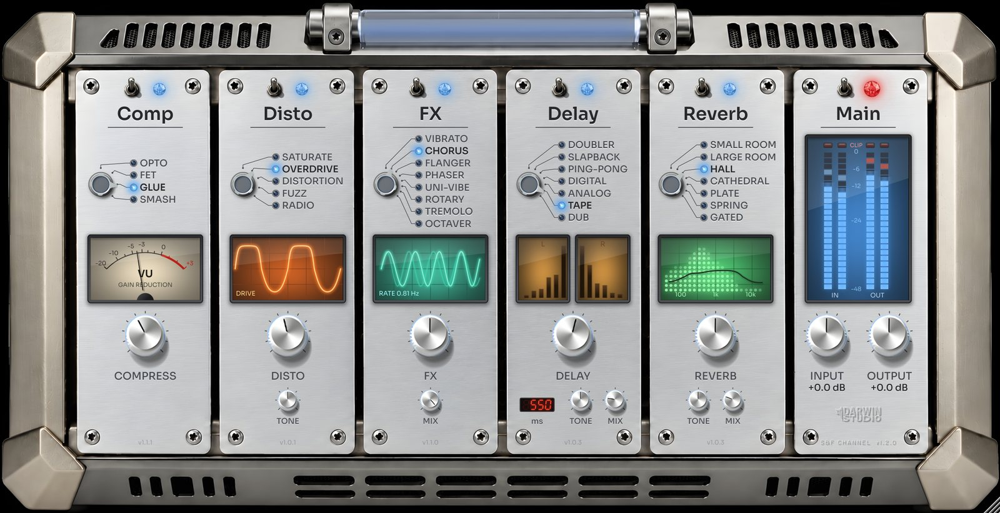

S&F Channel v1.2.0
Set & Forget Channel
All five Set & Forget plugins in one insert, in a fixed order: Input, Comp, Disto, FX, Delay, Reverb, Out. Each module has its own on/off switch, mode selector and big knob, with every mode of its plugin. A module that's switched off uses no CPU at all.
Also: Input and Output trims, Disto Tone, Mix on FX, Delay and Reverb, Tone on Delay and Reverb, Bypass.
- Comp Opto, FET, Glue, Smash
- Disto Saturate, Overdrive, Distortion, Fuzz, Radio
- FX Vibrato, Chorus, Flanger, Phaser, Uni-Vibe, Rotary, Tremolo, Octaver
- Delay Doubler, Slapback, Ping-Pong, Digital, Analog, Tape, Dub
- Reverb Small Room, Large Room, Hall, Cathedral, Plate, Spring, Gated